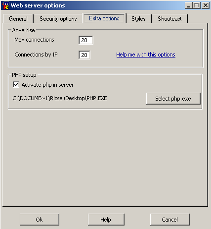
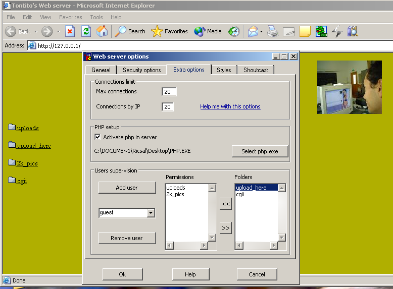
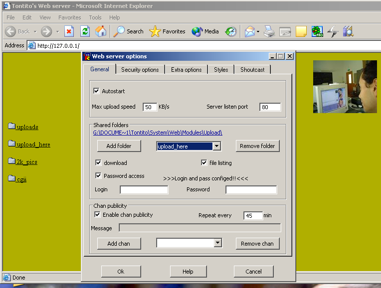
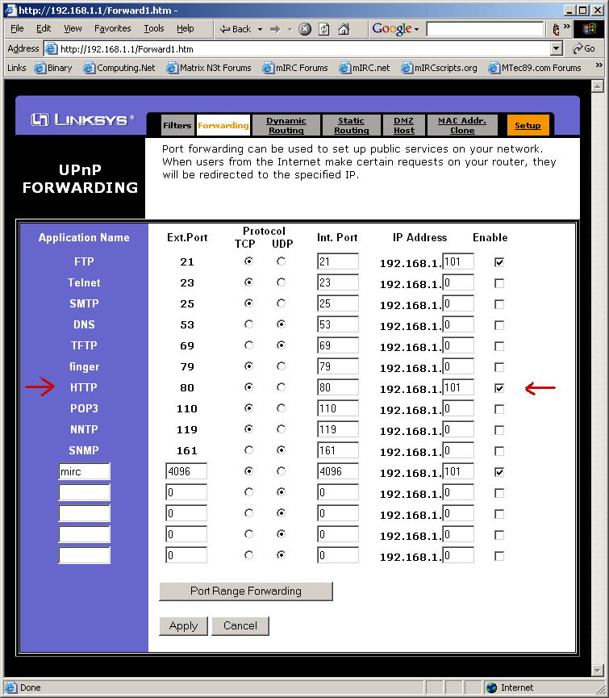

<html>
<head></head>
<body topmargin="0" leftmargin="0" rightmargin="0" bottommargin="0"><div>
<p align=center><font color="#FF0000" size="6" face="Times New Roman">
<span>Tontito's Web server Help</span></font></p>
<p align=center><font face="Times New Roman"><span lang=EN-GB style='mso-ansi-language:
EN-GB'><font size="4"><br>
<a href="#Web_Server_Features">Web Server Features</a><u1:p>&nbsp;&nbsp;&nbsp;&nbsp;&nbsp;&nbsp;&nbsp;&nbsp;&nbsp;
</u1:p></font></span><font size="4"><a href="#How_to_start"><span lang=EN-GB style='mso-ansi-language:
EN-GB'>How to start</span></a><span lang=EN-GB style='mso-ansi-language:EN-GB'>&nbsp;&nbsp;&nbsp;&nbsp;&nbsp;&nbsp;&nbsp;
&nbsp;&nbsp; </span><a href="#news"><span lang=EN-GB style='mso-ansi-language:
EN-GB'>News</span></a><span lang=EN-GB style='mso-ansi-language:EN-GB'>&nbsp;&nbsp;
&nbsp; &nbsp;&nbsp;&nbsp;&nbsp; </span><a href="#Whataf"><span lang=EN-GB
style='mso-ansi-language:EN-GB'>Limits&nbsp;</span></a><span lang=EN-GB
style='mso-ansi-language:EN-GB'>&nbsp;&nbsp; &nbsp;&nbsp; &nbsp;&nbsp; <a
href="#Common_problems">Common problems</a>&nbsp;&nbsp;&nbsp;&nbsp;&nbsp;&nbsp;&nbsp;
<a href="#Bug%20report">Bug Report</a></span><a href="help.html#Whataf"><span
lang=EN-GB style='mso-ansi-language:EN-GB'>&nbsp;</span></a></font></font><span lang=EN-GB
style='mso-ansi-language:EN-GB'><font size="4" face="Times New Roman">&nbsp; &nbsp; &nbsp; &nbsp; 
<a href="Report/Tenable%20NeWT%20Security%20Report.htm">Safe to use
(NeWT Security Scanner report)</a></font><o:p></o:p></span></p>

<p align=center style='text-align:center'><b><font face="Times New Roman"><a name="Web_Server_Features"><span
lang=EN-GB style='mso-ansi-language:EN-GB'><font size="4">Web Server Features</font></span></a></font></b><span lang=EN-GB style='mso-ansi-language:
EN-GB; mso-bookmark:Web_Server_Features'><b><font size="4" face="Times New Roman">
</font></b> <o:p></o:p></span></p>

<p>
<span lang=EN-GB
style='mso-ansi-language:EN-GB; mso-bookmark:Web_Server_Features'>
<font face="Times New Roman" size="4">This server allows you to have a web page in
your pc. <span class=GramE>Has</span> a lot of options for you to put it
running just the way you want.<u1:p> &nbsp; </u1:p></font><o:p></o:p></span></p>

<p><font face="Times New Roman">
<span lang=EN-GB
style='mso-ansi-language:EN-GB; mso-bookmark:Web_Server_Features'>
<font size="4">Attention:</font></span></font><span lang=EN-GB style='mso-ansi-language:
EN-GB; mso-bookmark:Web_Server_Features'><font size="4" face="Times New Roman"> This server doesn&#8217;t run script languages like <span class=SpellE>Php</span>
or <span class=SpellE>Cgi</span>, at least for now but it supports Mhtml v2.<br>
&nbsp;&nbsp;&nbsp;&nbsp;&nbsp;&nbsp;&nbsp;&nbsp;&nbsp;&nbsp;&nbsp;&nbsp;&nbsp;&nbsp;&nbsp;&nbsp;&nbsp;
Also java script is supported since it runs in the browser. </font> <o:p></o:p></span></p>

<p>
<span lang=EN-GB
style='mso-ansi-language:EN-GB; mso-bookmark:Web_Server_Features'>
<font face="Times New Roman" size="4">This way you can have only a web page online or
something more...&quot;<span class=SpellE>warez</span>&quot; here you can share
some of your files.<u1:p> </u1:p></font><o:p></o:p></span></p>

<p><font face="Times New Roman">
<span lang=EN-GB
style='mso-ansi-language:EN-GB; mso-bookmark:Web_Server_Features'>
<font size="4">To do that, this server supports multi shared <span
class=GramE>folders, that</span> means that you can have a shared folder on
your c:\downloads and another in d:\files\mp3, this is just an example</font></span></font><span
lang=EN-GB style='mso-ansi-language:EN-GB'><font face="Times New Roman"><font size="4">.</font><u1:p><font size="4">
</font> </u1:p></font><o:p></o:p></span></p>

<p><span lang=EN-GB style='mso-ansi-language:EN-GB'>
<font face="Times New Roman" size="4">You can add as many folders
as you want, you just need to go to Menu bar -&gt; Web Server -&gt; <span
class=SpellE>Configs</span>.<u1:p> </u1:p></font><o:p></o:p></span></p>

<p><span lang=EN-GB style='mso-ansi-language:EN-GB'>
<font face="Times New Roman" size="4">In the dialog that is
opened you just have to select the &quot;Add new folder&quot; button and in the
2&ordm; dialog you select the folder you want to share. </font> <o:p></o:p></span></p>

<p><font face="Times New Roman"><span lang=EN-GB style='mso-ansi-language:EN-GB'>
<font size="4">&nbsp;After this you just
have to give it a virtual name, any name is valid with no blank spaces between.<u1:p>
In the example below the virtual folder name is &quot;<span class=SpellE>utils</span>&quot;
and the real folder path name is &quot;</u1:p></font></span><font size="4"><span lang=EN-GB
style='mso-ansi-language:EN-GB'><u1:p>D:\ric\Document\Scripting\&quot;.</u1:p></span></font></font><span
lang=EN-GB style='mso-ansi-language:EN-GB'><font size="4" face="Times New Roman">
</font> <o:p></o:p></span></p>

<p><span lang=EN-GB style='mso-ansi-language:EN-GB'>
<font face="Times New Roman" size="4">If you have more than one
folder the web server enters in multi mode and to help in the browsing process
it creates an initial page, that is dynamic, that list all shared folders.<u1:p>
</u1:p></font><o:p></o:p></span></p>

<p><span lang=EN-GB style='mso-ansi-language:EN-GB'>
<font face="Times New Roman" size="4">You can now try your web
server by running you browser with this <span class=SpellE>Url</span> <a
href="http://127.0.0.1/">http://127.0.0.1/</a><span class=GramE>&nbsp;</span> ,
this is you local host <span class=SpellE>Ip</span> and can run even if you
aren't connected to internet.<u1:p> </u1:p></font><o:p></o:p></span></p>

<p><span lang=EN-GB style='mso-ansi-language:EN-GB'>
<font face="Times New Roman" size="4">Ok, at this moment you have
already the shared folders you need. Now you may not want that people see the
files that are inside of these folders and just want them to see html files, so
you can go again to the config dialog and uncheck the &quot;Allow file listing
in this folder&quot; option, don't forget that with this turned off people can
only see html when they type http://your_ip/shared_folder1/ unless they know
the folder content and type the specific <span class=SpellE>Url</span> to a
file.<u1:p> </u1:p></font><o:p></o:p></span></p>

<p><span lang=EN-GB style='mso-ansi-language:EN-GB'>
<font face="Times New Roman" size="4">This option is turned on in
the load process to guarantee that you see something when you share a folder
that doesn't have <span class=GramE>a</span> &quot;index.html&quot; or
&quot;index.htm&quot; inside and you want to see something in your browser
(Many people say that it doesn't work just because they forgot the basic html).<u1:p>
</u1:p></font><o:p></o:p></span></p>

<p><span lang=EN-GB style='mso-ansi-language:EN-GB'>
<font size="4" face="Times New Roman">At this moment you have the
basic stuff now we can start to be bad and don't allow download in some
specific folders. To do this lets go again to the config dialog and select the
shared folder in the combo list and then uncheck the &quot;Allow download in
this folder&#8221;. From now on this folder is totally invisible so you ask me:
&quot;what is the use of this?&quot;&nbsp; Well, if you have the Allow files
listing in folders people can see what you have in your pc but they can't
download them :</font><span class=GramE><font size="4" face="Times New Roman">) .</font><u1:p></u1:p></span><font face="Times New Roman" size="4">
</font> <o:p></o:p></span></p>

<p><span lang=EN-GB style='mso-ansi-language:EN-GB'>
<font face="Times New Roman" size="4">You can also remove the
shared folders, you just need to select the folder you want to remove in the
config dialog and press the &quot;Remove this folder&quot; button.</font><o:p></o:p></span></p>

<p><span lang=EN-GB style='mso-ansi-language:EN-GB'>
<font face="Times New Roman" size="4">What can we do more to
config the server?<u1:p> </u1:p></font><o:p></o:p></span></p>

<p><span lang=EN-GB style='mso-ansi-language:EN-GB'>
<font face="Times New Roman" size="4">We can setup the max upload
speed so you ask again: &quot;what is the use of this?&quot;<u1:p> </u1:p>
</font><o:p></o:p></span></p>

<p style='margin:0cm;margin-bottom:.0001pt'><span lang=EN-GB style='mso-ansi-language:
EN-GB'><font face="Times New Roman" size="4">Simple, if you like to play internet games and you need some upload
speed for your game you can use this to guaranty that you have it.</font><o:p></o:p></span></p>

<p style='margin:0cm;margin-bottom:.0001pt'><span lang=EN-GB style='mso-ansi-language:
EN-GB'><font face="Times New Roman" size="4">&nbsp;For this you must write in the text field and press the ok button.</font><o:p></o:p></span></p>

<p style='margin:0cm;margin-bottom:.0001pt'><span lang=EN-GB style='mso-ansi-language:
EN-GB'><font face="Times New Roman" size="4">To disable this option you just need to clear this field and press ok
button</font><o:p></o:p></span></p>

<p style='margin:0cm;margin-bottom:.0001pt'><span lang=EN-GB style='mso-ansi-language:
EN-GB'><font face="Times New Roman" size="4">&nbsp;</font><o:p></o:p></span></p>

<p style='margin:0cm;margin-bottom:.0001pt'>
<font face="Times New Roman" size="4"><span lang=EN-GB style='mso-ansi-language:
EN-GB'>Since version 2.49.8</span></font></p>
<ul>
	<li>
	<p style='margin:0cm;margin-bottom:.0001pt'>
	<span lang=EN-GB style='mso-ansi-language:EN-GB'>
	<font size="4" face="Times New Roman">There
is now a&nbsp; Server listen port when you can set the port you want to listen
for requests (just type the port n&ordm; to set it) </font></span></p></li>
	<li>
	<p style='margin:0cm;margin-bottom:.0001pt'><font face="Times New Roman">
	<font size="4"><span lang=EN-GB style='mso-ansi-language:EN-GB'>Also
there is an <span class=SpellE>Ip</span> blocking section where you can had ips
that you don't what to connect to your Web server. <span class=GramE>its</span>
very easy to add and to remove. If you uncheck the &quot;Enable 
	<span
class=SpellE>ip</span> blocking&quot; all ips that are in list can again 
	<span
class=GramE>connect</span> to your server. You never lose your 
	<span
class=SpellE>ip</span> list!!</span></font><span lang=EN-GB><font size="4">
	</font></span></font></p></li>
	<li>
	<p style='margin:0cm;margin-bottom:.0001pt'>
	<span lang=EN-GB style='mso-ansi-language:EN-GB'>
	<font size="4" face="Times New Roman">Also
if you type &quot;/<span class=SpellE>list_con</span>&quot; you can see the
current connections and the requests they made. </font>
	<o:p></o:p></span></p></li>
</ul>

<p style='margin:0cm;margin-bottom:.0001pt'><span lang=EN-GB style='mso-ansi-language:
EN-GB'><font face="Times New Roman" size="4">Since version 2.52 </font> <o:p>
<a name="root"></a></o:p></span></p>

<ul>
	<li>
	<p style='margin:0cm;margin-bottom:.0001pt'>
	<span lang=EN-GB style='mso-ansi-language:
EN-GB'><font face="Times New Roman" size="4">&nbsp;</font></span><font face="Times New Roman"><font size="4"><span class=GramE><span lang=EN-GB style='mso-ansi-language:EN-GB'>There</span></span></font><span
lang=EN-GB style='mso-ansi-language:EN-GB'><font size="4"> is also a &quot;Smart 
	<span
class=SpellE>Ip</span> Blocking&quot; that when turned on with &quot;Enable 
	<span
class=SpellE>Ip</span> Blocking&quot;, when you get an attack in your server,
the <span class=SpellE>ip</span> is added to <span class=SpellE>ip</span>
blocking list and next time that guy wont be able to connect again. 
	<span
class=GramE>This options</span> are turned on in the load process)</font></span></font></p>
	</li>
	<li class=MsoNormal style='mso-margin-top-alt:auto;mso-margin-bottom-alt:auto;
     mso-list:l13 level1 lfo2;tab-stops:list 36.0pt'>
	<span lang=EN-GB
     style='mso-ansi-language:EN-GB'><font face="Times New Roman" size="4">&nbsp; In this version was also
     implemented the option for you to have o root folder. You just need to add
     a shared folder named &quot;root&quot;. Any index.htm, index.html, 
	index.mhtml or index.php will
     run when calling the root page. It you don't have them you will just see
     the virtual folder list.<u1:p> </u1:p></font>
	<o:p></o:p></span></li>
</ul>

<p><font face="Times New Roman" size="4">Since version 2.61<u1:p>.1 </u1:p>
</font></p>

<ul type=disc>
 <li class=MsoNormal style='mso-margin-top-alt:auto;mso-margin-bottom-alt:auto;
     mso-list:l4 level1 lfo3;tab-stops:list 36.0pt'><span lang=EN-GB
     style='mso-ansi-language:EN-GB'><font face="Times New Roman" size="4">Added password protection for specific
     folders. </font> <u1:p></u1:p><o:p></o:p></span></li>
</ul>

<p class=MsoNormal style='mso-margin-top-alt:auto;mso-margin-bottom-alt:auto;
margin-left:35.4pt'><span lang=EN-GB style='mso-ansi-language:EN-GB'>
<font face="Times New Roman" size="4">To config
this option go to config dialog in shared folders section, choose the folder
you want to protect and set the login and pass you desire, then select the
option to have password access in that folder. I know it isn&#8217;t the best
interface but have some speed limitations in the all script and working like
this the script is much faster.</font><o:p></o:p></span></p>

<ul type=disc>
 <li class=MsoNormal style='mso-margin-top-alt:auto;mso-margin-bottom-alt:auto;
     mso-list:l0 level1 lfo4;tab-stops:list 36.0pt'><span lang=EN-GB
     style='mso-ansi-language:EN-GB'><font face="Times New Roman" size="4">Added specific <span class=SpellE>ip</span>
     access. You just need to add the <span class=SpellE>ip</span> you want to
     give access<u1:p> </u1:p></font><o:p></o:p></span></li>
 <li class=MsoNormal style='mso-margin-top-alt:auto;mso-margin-bottom-alt:auto;
     mso-list:l0 level1 lfo4;tab-stops:list 36.0pt'><span lang=EN-GB
     style='mso-ansi-language:EN-GB'><font face="Times New Roman" size="4">Added option to make <span class=SpellE>chan</span>
     publicity of your server. To set it up you just need to fill all the
     fields (time in minutes, message and at least one <span class=SpellE>chan</span>)<u1:p>
     </u1:p></font><o:p></o:p></span></li>
</ul>

<p><font face="Times New Roman" size="4">Since version 2.80</font></p>

<ul type=disc>
 <li class=MsoNormal style='mso-margin-top-alt:auto;mso-margin-bottom-alt:auto;
     mso-list:l11 level1 lfo5;tab-stops:list 36.0pt'><span lang=EN-GB
     style='mso-ansi-language:EN-GB'><font face="Times New Roman" size="4">Language support (3 languages available:
     English, Portuguese and Swedish)</font><o:p></o:p></span></li>
 <li class=MsoNormal style='mso-margin-top-alt:auto;mso-margin-bottom-alt:auto;
     mso-list:l11 level1 lfo5;tab-stops:list 36.0pt'><span lang=EN-GB
     style='mso-ansi-language:EN-GB'><font face="Times New Roman" size="4">New interface to control all connections
     that currently using your web server using the /<span class=SpellE>list_con</span>
     command (Now you can see them in real-time, kill them or block future
     access)</font><o:p></o:p></span></li>
</ul>

<p><font face="Times New Roman" size="4">Since version 3.0</font></p>

<ul type=disc>
 <li class=MsoNormal style='mso-margin-top-alt:auto;mso-margin-bottom-alt:auto;
     mso-list:l6 level1 lfo6;tab-stops:list 36.0pt'><span lang=EN-GB
     style='mso-ansi-language:EN-GB'><font face="Times New Roman" size="4">Added interface to set limits to
     connections</font><o:p></o:p></span></li>
 <li class=MsoNormal style='mso-margin-top-alt:auto;mso-margin-bottom-alt:auto;
     mso-list:l6 level1 lfo6;tab-stops:list 36.0pt'>
	<font face="Times New Roman" size="4"><span lang=EN-GB
     style='mso-ansi-language:EN-GB'>Added support for <span class=SpellE>mhtml</span>
     pages, html pages with <span class=SpellE>mirc</span> script (works like <span
     class=SpellE>php</span> but much more simple)</span></font></li>
</ul>

<p><font face="Times New Roman" size="4">Since version 3.1</font></p>

<ul type=disc>
 <li class=MsoNormal style='mso-margin-top-alt:auto;mso-margin-bottom-alt:auto;
     mso-list:l10 level1 lfo7;tab-stops:list 36.0pt'><span lang=EN-GB
     style='mso-ansi-language:EN-GB'><font face="Times New Roman" size="4">Added option to change <span class=SpellE>
	colours</span>
     in pages (listing files), for that you must enter the Hex value of the
     color you want. This is the only way for you to set any color you want.</font><o:p></o:p></span></li>
 <li class=MsoNormal style='mso-margin-top-alt:auto;mso-margin-bottom-alt:auto;
     mso-list:l10 level1 lfo7;tab-stops:list 36.0pt'><span lang=EN-GB
     style='mso-ansi-language:EN-GB'><font face="Times New Roman" size="4">Added <span class=GramE>option to put
     color in publicity in <span class=SpellE>chan. You</span> just need</span>
     to use the control + k color codes for that.</font><o:p></o:p></span></li>
 <li class=MsoNormal style='mso-margin-top-alt:auto;mso-margin-bottom-alt:auto;
     mso-list:l10 level1 lfo7;tab-stops:list 36.0pt'><span lang=EN-GB
     style='mso-ansi-language:EN-GB'><font face="Times New Roman" size="4">Now there is a &quot;Page title
     Welcome&quot; section in &quot;Styles&quot; Tab, just type the welcome message you
     want.<u1:p> </u1:p></font><o:p></o:p></span></li>
</ul>

<p><font face="Times New Roman" size="4">Since version 3.50</font></p>

<ul type=disc>
 <li class=MsoNormal style='mso-margin-top-alt:auto;mso-margin-bottom-alt:auto;
     mso-list:l8 level1 lfo8;tab-stops:list 36.0pt'>
	<font face="Times New Roman" size="4"><span lang=EN-GB
     style='mso-ansi-language:EN-GB'>Added live shoutcast option. This option
     is enabled when you load a folder with mp3's in the shoutcast section or
     you set a <span class=SpellE>hastable</span> loaded and <span
     class=SpellE>controlled</span> by you. The shoutcast service will be
     available in the link </span><a href="http://your_ip/live"><span
     lang=EN-GB style='mso-ansi-language:EN-GB'>http://your_ip/live</span></a></font><span
     lang=EN-GB style='mso-ansi-language:EN-GB'><o:p></o:p></span></li>
</ul>

<p><span lang=EN-GB style='mso-ansi-language:EN-GB'>
<font face="Times New Roman" size="4">&nbsp;&nbsp;&nbsp;&nbsp;&nbsp;&nbsp;&nbsp;&nbsp;&nbsp;
If you access that link with your browser you can see the complete list of mp3
loaded and the mp3 that is running at the moment. </font> <o:p></o:p></span></p>

<p><span lang=EN-GB style='mso-ansi-language:EN-GB'>
<font face="Times New Roman" size="4">&nbsp;&nbsp;&nbsp;&nbsp;&nbsp;&nbsp;&nbsp;&nbsp;
<span style='color:red'>NOTE: </span><span class=SpellE>Don't</span> <span
class=SpellE>mix</span> normal mp3 with mp3pro format, <span class="SpellE">Winamp</span>
<span class=SpellE>doesn't</span> like it much.</font><o:p></o:p></span></p>

<ul type=disc>
 <li class=MsoNormal style='mso-margin-top-alt:auto;mso-margin-bottom-alt:auto;
     mso-list:l9 level1 lfo9;tab-stops:list 36.0pt'>
	<font face="Times New Roman" size="4"><span lang=EN-GB
     style='mso-ansi-language:EN-GB'>Added new style for default text color in
     config options. This will allow you to see the file size when listing
     files in browser when having a black background.</span></font></li>
</ul>

<p class=MsoNormal style='mso-margin-top-alt:auto;mso-margin-bottom-alt:auto'>&nbsp;</p>
<p class=MsoNormal style='mso-margin-top-alt:auto;mso-margin-bottom-alt:auto'>
<font face="Times New Roman">
<font size="4"></font></a></font><span
lang=EN-GB style='mso-ansi-language:EN-GB'>
<font size="4" face="Times New Roman"><span
style='mso-spacerun:yes'>&nbsp;</span>Since version 4.0</font><o:p></o:p></span></p>

<ul type=disc>
 <li class=MsoNormal style='mso-margin-top-alt:auto;mso-margin-bottom-alt:auto;
     mso-list:l14 level1 lfo17;tab-stops:list 36.0pt'>
	<font face="Times New Roman" size="4"><span lang=EN-GB
     style='mso-ansi-language:EN-GB'>Added <span class="SpellE">Php</span>
     support in server. To turn this option on, you must go to config dialog in
     &#8220;Extra options&#8221; tab (see below). Then you must select the 
	php.exe in your system and it is done.</span></font></li>
	<li class=MsoNormal style='mso-margin-top-alt:auto;mso-margin-bottom-alt:auto;
     mso-list:l14 level1 lfo17;tab-stops:list 36.0pt'>
	<span lang="en-gb"><font face="Times New Roman" size="4">For php to run well 
	with mysql you will need mysql installed and running and mysql support in 
	php.exe file</font></span></li>
	<li class=MsoNormal style='mso-margin-top-alt:auto;mso-margin-bottom-alt:auto;
     mso-list:l14 level1 lfo17;tab-stops:list 36.0pt'>
	<span lang="en-gb"><font face="Times New Roman" size="4">This option will 
	only work with mirc v6.12+</font></span></li>
</ul>

<p><span lang=EN-GB style='mso-ansi-language:EN-GB'>
<font face="Times New Roman" size="4">&nbsp;<a name="news"></a></font></span></p>
<p><span
lang=EN-GB style='mso-ansi-language:EN-GB'>
<font size="4" face="Times New Roman">Since version 4.2.3</font></span></p>
<ul>
	<li><span lang="en-gb"><font face="Times New Roman" size="4">Added support 
	for multiple users, each one with different permissions (folders that can be 
	open) see more info down</font></span></li>
	<li><span lang="en-gb"><font face="Times New Roman" size="4">Added myip 
	identifier that will be replaced by your current ip when you have chan 
	publicity on.</font></span></li>
	<li><span lang="en-gb"><font face="Times New Roman" size="4">Added !web 
	server trigger that will be used by other users in chan to show you current 
	message, when you have chan publicity on. </font></span></li>
</ul>
<p>&nbsp;</p>
<p><span lang=EN-GB style='mso-ansi-language:EN-GB'>
<font face="Times New Roman" size="4">The config dialog is this.</font><o:p></o:p></span></p>

<p align=center>
<span lang=EN-GB style='mso-ansi-language:
EN-GB; font-weight:700'><font size="4" face="Times New Roman">&nbsp;&nbsp;&nbsp;&nbsp;&nbsp;&nbsp;&nbsp; 
</font> <span style='mso-bidi-font-weight:
normal'><font size="4" face="Times New Roman">General setup section</font><o:p></o:p></span></span></p>

<p align=center><font face="Times New Roman" size="4"><span lang=EN-GB style='mso-ansi-language:
EN-GB'></span></font></p>

<p align=center style='text-align:center'>&nbsp;</p>

<p align=center>
<span style='mso-bidi-font-weight:normal; font-weight:700'>
<font face="Times New Roman" size="4">Styles
setup section</font><o:p></o:p></span></p>

<p align=center style='text-align:center'><font face="Times New Roman" size="4"></font></p>

<p align=center style='text-align:center'><font face="Times New Roman" size="4"><span lang=EN-GB style='mso-ansi-language:
EN-GB'><o:p>&nbsp;</o:p></span></font></p>

<p align=center style='text-align:center'>
<span
lang=EN-GB style='mso-ansi-language:EN-GB; mso-bidi-font-weight:normal; font-weight:700'>
<font face="Times New Roman" size="4">Extra Options section</font><o:p></o:p></span></p>

<p align=center style='text-align:center'>
<span lang=EN-GB style='mso-ansi-language:
EN-GB'><font face="Times New Roman" size="4">&nbsp;</font><o:p></o:p></span></p>

<p align=center style='text-align:center'><span lang=EN-GB style='mso-ansi-language:
EN-GB'><font face="Times New Roman" size="4">&nbsp;</font></span></p>
<p align="center"><span lang="en-gb"><b><font face="Times New Roman" size="4">
Set user's permissions</font></b></span></p>
<p align="center">
</p>
<p align="center">&nbsp;</p>
<p align=center style='text-align:left'><span lang="en-gb">
<font face="Times New Roman" size="4">For this option to work fine, you must 
enable password protection in the folders himself (put a big and hard one). So in the folders you want to 
give this type of access check if they have login and password checked.</font></span></p>
<p align=center>
</p>
<p align=center style='text-align:center'>&nbsp;</p>
<p align=center style='text-align:center'><font face="Times New Roman" size="4">
<a name="How_to_start">
<span
lang=EN-GB style='mso-ansi-language:EN-GB; font-weight:700'>How to start<u1:p> </u1:p> </span></a>
</font><span lang=EN-GB style='mso-ansi-language:
EN-GB'><o:p></o:p></span></p>

<p><span lang=EN-GB style='mso-ansi-language:EN-GB'>
<font face="Times New Roman" size="4">These are basic help topics
if you never <span class=spelle>config</span>ured a Web Server<u1:p> </u1:p>
</font><o:p></o:p></span></p>

<p style='margin:0cm;margin-bottom:.0001pt;word-spacing:0in'><span lang=EN-GB
style='mso-ansi-language:EN-GB'><font face="Times New Roman" size="4">To start go to <span class=spelle>Menu</span> <span
class=spelle>bar</span> -&gt; Web server -&gt; Commands -&gt; start<u1:p>
&nbsp; </u1:p></font><o:p></o:p></span></p>

<p align=center style='margin:0cm;margin-bottom:.0001pt;text-align:center;
word-spacing:0in'><font face="Times New Roman" size="4"><span lang=EN-GB style='mso-ansi-language:EN-GB'></span></font><o:p></o:p></p>

<p style='margin:0cm;margin-bottom:.0001pt;word-spacing:0in'><span lang=EN-GB
style='mso-ansi-language:EN-GB'><font face="Times New Roman" size="4"><br>
To share another folder <span class=GramE>go</span> to <span class=spelle>Menu</span>
<span class=spelle>bar</span> -&gt; Web Server -&gt; <span class=spelle>Config.
In the dialog select &quot;Add new folder&quot;</span><span class=grame> and</span>
then select a folder.&nbsp;<u1:p> </u1:p></font><o:p></o:p></span></p>

<p style='margin:0cm;margin-bottom:.0001pt;word-spacing:0in'><span lang=EN-GB
style='mso-ansi-language:EN-GB'><font face="Times New Roman" size="4">Everything you have inside of it will be shared.<u1:p>
</u1:p></font><o:p></o:p></span></p>

<p style='margin:0cm;margin-bottom:.0001pt;word-spacing:0in'><span lang=EN-GB
style='mso-ansi-language:EN-GB'><font face="Times New Roman" size="4"><br>
You can also deactivate an option to allow listings of files when you don't
have <span class=GramE><span class=grame>a</span></span> index file in an
specific folder.<br>
Go to <span class=spelle>Menu</span> <span class=spelle>bar</span> -&gt; Web
Server -&gt; <span class=spelle>Config</span>. In the dialog select checkbox
&quot;Allow file listing in this folder&quot;<span class=GramE>&nbsp; to</span>
deactivate it.&nbsp;<u1:p> </u1:p></font><o:p></o:p></span></p>

<p><span lang=EN-GB style='mso-ansi-language:EN-GB'>
<font size="4" face="Times New Roman">&nbsp;</font><u1:p><font face="Times New Roman"><font size="4">
</font> <a
name=Whataf><font size="4"></font></a></font><o:p></o:p>

</u1:p>

</span></p>

<p align=center style='text-align:center'><font face="Times New Roman" size="4">
<span lang=EN-GB
style='mso-ansi-language:EN-GB; font-weight:700'>Connections limit (in Extra options tab)</span></font><span
lang=EN-GB style='mso-ansi-language:EN-GB'><o:p></o:p></span></p>

<p><span lang=EN-GB style='mso-ansi-language:EN-GB'>
<font face="Times New Roman" size="4">&nbsp;Added since version
3.0</font><o:p></o:p></span></p>

<p style='margin-left:36.0pt;text-indent:-18.0pt;mso-list:l3 level1 lfo10;
tab-stops:list 36.0pt'><![if !supportLists]><span
style='mso-list:Ignore'><font face="Times New Roman">
<span lang=EN-GB style='mso-bidi-font-size:12.0pt;mso-fareast-font-family:
Symbol;mso-bidi-font-family:Symbol;mso-ansi-language:EN-GB'><font size="4">&middot;</font></span></font><font size="4"><span style='font-style:normal; font-variant:normal; font-weight:normal; font-family:Times New Roman; mso-bidi-font-size:12.0pt; mso-fareast-font-family:Symbol; mso-bidi-font-family:Symbol; mso-ansi-language:EN-GB' lang="EN-GB">&nbsp;&nbsp;&nbsp;&nbsp;&nbsp;&nbsp;&nbsp;&nbsp;
</span></font></span><font size="4"><![endif]></font><span lang=EN-GB style='mso-ansi-language:EN-GB'>
<font size="4" face="Times New Roman">&nbsp;Max
connection :&nbsp;&nbsp;&nbsp;&nbsp;&nbsp;&nbsp;&nbsp;&nbsp;&nbsp;&nbsp; this
option allows you to set the max connections that the web server can hold at
same time</font><o:p></o:p></span></p>

<p style='margin-left:36.0pt;text-indent:-18.0pt;mso-list:l3 level1 lfo10;
tab-stops:list 36.0pt'><![if !supportLists]><span
style='mso-list:Ignore'><font face="Times New Roman">
<span lang=EN-GB style='mso-bidi-font-size:12.0pt;mso-fareast-font-family:
Symbol;mso-bidi-font-family:Symbol;mso-ansi-language:EN-GB'><font size="4">&middot;</font></span></font><font size="4"><span style='font-style:normal; font-variant:normal; font-weight:normal; font-family:Times New Roman; mso-bidi-font-size:12.0pt; mso-fareast-font-family:Symbol; mso-bidi-font-family:Symbol; mso-ansi-language:EN-GB' lang="EN-GB">&nbsp;&nbsp;&nbsp;&nbsp;&nbsp;&nbsp;&nbsp;&nbsp;
</span></font></span><font size="4"><![endif]></font><span lang=EN-GB style='mso-ansi-language:EN-GB'>
<font size="4" face="Times New Roman">Max
connections by <span class=SpellE>ip</span> :&nbsp; this option allows you to
set the max n&ordm; of downloads that can be made by <span class=SpellE>ip</span>
at same time, for this n&ordm; are only counted the files that are bigger than
100kb, so any normal html or small <span class=SpellE>pic</span> don't count. This
way people can be using they max limit of connections to download files and
still having a look at your web page.</font><o:p></o:p></span></p>

<p><span lang=EN-GB style='mso-ansi-language:EN-GB'>
<font face="Times New Roman" size="4">&nbsp;</font><o:p></o:p></span></p>

<p><span lang=EN-GB style='mso-ansi-language:EN-GB'>
<font face="Times New Roman" size="4">&nbsp;<u1:p> </u1:p></font><o:p></o:p></span></p>

<p align=center style='text-align:center'><font face="Times New Roman" size="4"><a name="Common_problems">
<span
lang=EN-GB style='mso-ansi-language:EN-GB; font-weight:700'>Common problems<u2:p> </u2:p></span></a>
</font><span
style='mso-bookmark:Common_problems'><u1:p></u1:p></span><span lang=EN-GB
style='mso-ansi-language:EN-GB'><o:p></o:p></span></p>

<p><font face="Times New Roman"><span class=grame><span lang=EN-GB style='mso-ansi-language:EN-GB'>
<font size="4">These are</font></span></span></font><span
lang=EN-GB style='mso-ansi-language:EN-GB'><font face="Times New Roman"><font size="4"> basic help topics to solve some
most common problems</font><u2:p><font size="4"> </font> </u2:p></font><u1:p></u1:p><o:p></o:p></span></p>

<ul type=disc>
 <li class=MsoNormal style='mso-margin-top-alt:auto;mso-margin-bottom-alt:auto;
     mso-list:l16 level1 lfo11;tab-stops:list 36.0pt'><span lang=EN-GB
     style='mso-ansi-language:EN-GB'><font face="Times New Roman" size="4">If no one can connect to your Web server
     maybe the <span class=SpellE><span class=spelle>ip</span></span> you have
     isn't the right one, so go to <span class=SpellE><span class=spelle>mirc</span></span>
     options<br>
     and select &quot;Always get Local Host&quot; in the Local Info option.<u2:p>
     </u2:p></font><u1:p></u1:p><o:p></o:p></span></li>
</ul>

<p><span lang=EN-GB style='mso-ansi-language:EN-GB'>
<font size="4" face="Times New Roman">First of all, if you are in
a <span class=grame>Network (</span><span class=spelle>LAN</span>), your web
server must be running in a pc that is directly connected to the internet,
unless you have a very good proxy that redirects the requests to the pc that is
running this server</font><span class=GramE><font size="4" face="Times New Roman">..</font><u2:p></u2:p></span><u2:p><font face="Times New Roman" size="4">
</font></u2:p>
<u1:p></u1:p>
<o:p></o:p></span></p>
<p><span lang=EN-GB style='mso-ansi-language:EN-GB'>
<font face="Times New Roman" size="4">To test this <span
class=spelle>addon</span> use your Internet Explorer and go to the given link.
If you have an index.htm/html in your folder shared as root it will be shown
before anything else.<u2:p> </u2:p></font>
<u1:p></u1:p>
<o:p></o:p></span></p>
<p><span lang=EN-GB style='mso-ansi-language:EN-GB'>
<font face="Times New Roman" size="4">If you still can't see
anything in your browser you can execute this next steps one by one until it
start to work:<u2:p> </u2:p></font>
<u1:p></u1:p>
<o:p></o:p></span></p>
<ol start=1 type=1>
	<li class=MsoNormal style='mso-margin-top-alt:auto;mso-margin-bottom-alt:auto;
     mso-list:l12 level1 lfo12;tab-stops:list 36.0pt'>
	<span lang=EN-GB
     style='mso-ansi-language:EN-GB'><font face="Times New Roman" size="4">Check if you Web Server is running, to do
     that go to <span class=spelle>Menu bar</span> -&gt; Web server -&gt;
     Commands -&gt; restart<u2:p> </u2:p></font>
	<u1:p></u1:p>
	<o:p></o:p></span></li>
	<li class=MsoNormal style='mso-margin-top-alt:auto;mso-margin-bottom-alt:auto;
     mso-list:l12 level1 lfo12;tab-stops:list 36.0pt'>
	<span lang=EN-GB
     style='mso-ansi-language:EN-GB'><font face="Times New Roman" size="4">Check if you have a 
	<span class=spelle>firewall</span>
     that allows <span class=SpellE><span class=spelle>mirc</span></span> to
     run as server. If you do, <span class=spelle>config</span> the 
	<span
     class=spelle>firewall</span> to allow <span class=SpellE>
	<span
     class=spelle>mirc</span></span> to run as server or turn the firewall off.
     </font>
	<o:p></o:p></span></li>
	<li class=MsoNormal style='mso-margin-top-alt:auto;mso-margin-bottom-alt:auto;
     mso-list:l12 level1 lfo12;tab-stops:list 36.0pt'>
	<font face="Times New Roman" size="4">
	<span lang=EN-GB
     style='mso-ansi-language:EN-GB'>If you are on a school protected by a
     proxy firewall, is better you forget to run this server. I also did :(<u2:p>
	</u2:p></span>
	<u2:p>
     </li>
 	</u2:p></font>
	<li class=MsoNormal style='mso-margin-top-alt:auto;mso-margin-bottom-alt:auto;
     mso-list:l12 level1 lfo12;tab-stops:list 36.0pt'>
	<span lang=EN-GB
     style='mso-ansi-language:EN-GB'><font face="Times New Roman" size="4">Type in status window &quot;/<span
     class=SpellE><span class=spelle>socklist</span></span>&quot; , if you get
     &quot;www <span class=SpellE>Your_ip:You_port</span> <span class=SpellE>
	<span
     class=spelle>tcp</span></span> listening&quot; the server is running<u2:p>
	</u2:p></font>
	<o:p></o:p></span></li>
	<li class=MsoNormal style='mso-margin-top-alt:auto;mso-margin-bottom-alt:auto;
     mso-list:l12 level1 lfo12;tab-stops:list 36.0pt'>
	<font face="Times New Roman" size="4">
	<span lang=EN-GB
     style='mso-ansi-language:EN-GB'>Insert the link </span>
	<a
     href="http://127.0.0.1/"><span lang=EN-GB style='mso-ansi-language:EN-GB'>http://127.0.0.1/</span></a><span
     lang=EN-GB style='mso-ansi-language:EN-GB'> in your browser and request
     the page. </span><span class=spelle>
	<span lang=EN-ZW style='mso-ansi-language:
     EN-ZW'>This</span></span><span lang=EN-ZW style='mso-ansi-language:EN-ZW'>
	</span><span class=GramE><span class=spelle>Url</span></span>
	<span
     class=spelle><span lang=EN-ZW style='mso-ansi-language:EN-ZW'>is</span></span><span
     lang=EN-ZW style='mso-ansi-language:EN-ZW'> <span class=spelle>your</span>
	<span class=spelle>local host</span> </span><span class=spelle>IP</span>.</font><u1:p></u1:p><font face="Times New Roman" size="4">
	</font></li>
	<li class=MsoNormal style='mso-margin-top-alt:auto;mso-margin-bottom-alt:auto;
     mso-list:l12 level1 lfo12;tab-stops:list 36.0pt'>
	<font face="Times New Roman"><span class=grame>
	<span
     lang=EN-GB style='mso-ansi-language:EN-GB'><font size="4">If</font></span></span><font size="4"><span
     lang=EN-GB style='mso-ansi-language:EN-GB'> you are using Internet
     explorer (very buggy) close it, open it again and insert the link </span>
	<a
     href="http://127.0.0.1/"><span lang=EN-GB style='mso-ansi-language:EN-GB'>http://127.0.0.1/</span></a></font></font><span
     lang=EN-GB style='mso-ansi-language:EN-GB'><font face="Times New Roman"><font size="4"> in it. You can also click in
     the link before to test it. You may <span class=spelle>need</span> to
     refresh the page to see something by pressing also control
     key.</font><u2:p><font size="4"> </font></u2:p></font>
	<o:p></o:p></span></li>
	<li class=MsoNormal style='mso-margin-top-alt:auto;mso-margin-bottom-alt:auto;
     mso-list:l12 level1 lfo12;tab-stops:list 36.0pt'>
	<font face="Times New Roman"><span class=grame>
	<span
     lang=EN-GB style='mso-ansi-language:EN-GB'><font size="4">If</font></span></span></font><span
     lang=EN-GB style='mso-ansi-language:EN-GB'><font face="Times New Roman"><font size="4"> you are using Netscape you
     just <span class=spelle>need</span> to <span class=spelle>refresh</span>
     the page normally or also pressing shift key.</font></font></span></li>
	<li class=MsoNormal style='mso-margin-top-alt:auto;mso-margin-bottom-alt:auto;
     mso-list:l12 level1 lfo12;tab-stops:list 36.0pt'><span lang="en-gb">
	<font face="Times New Roman" size="4">Do you connect to 
	internet using a router? Well if that is the case, you will have to turn ON 
	port forwarding of the requests made from outside to your computer.</font></span></li>
</ol>
<p><span lang="en-gb"><font face="Times New Roman" size="4">&nbsp;&nbsp;&nbsp;&nbsp;&nbsp;&nbsp;&nbsp;&nbsp;&nbsp;&nbsp;&nbsp; 
So if you can setup your router, in the this case by web with ie, you must turn 
this options on. In this case the port been forwarded is port 80 and the example 
explains all the procedure.</font></span></p>
<p><span lang="en-gb"><font face="Times New Roman" size="4">&nbsp;&nbsp;&nbsp;&nbsp;&nbsp;&nbsp;&nbsp;&nbsp;&nbsp;&nbsp;&nbsp; 
In resume, all the requests made from outside to port 80 must be redirected to 
your computer, your LAN Ip (example 192.168.*.*) , to the port where you are listening for connections.</font></span></p>
<p><span lang="en-gb"><font face="Times New Roman" size="4">&nbsp;&nbsp;&nbsp;&nbsp;&nbsp;&nbsp;&nbsp;&nbsp;&nbsp;&nbsp;&nbsp; 
This interface is different from other routers model but the concept is the same 
so look for something that contains similar settable fields.</font></span></p>
<p align="center"><span lang="en-gb"><font face="Times New Roman" size="4">&nbsp;&nbsp;
</font></span></p>
<p align="center"><span lang="en-gb"><font face="Times New Roman">Thanks to 
Mtec89 for this image&nbsp;&nbsp;&nbsp;&nbsp;&nbsp;&nbsp;&nbsp; </font></span>
</p>
<p>&nbsp;</p>
<p><span lang=EN-GB style='mso-ansi-language:EN-GB'>
<font face="Times New Roman" size="4">At the end of <span
class=GramE><span class=grame>this steps</span></span> you should be able to
see what you have inside of your shared folder.</font><u2:p></u2:p><o:p></o:p></span></p>
<p><span lang=EN-GB style='mso-ansi-language:EN-GB'>
<font face="Times New Roman" size="4">If this doesn't work,
contact me in messenger and i will fix your problem, i hope :<span class=GramE>)
.</span></font><o:p></o:p></span></p>
<p><span lang=EN-GB style='mso-ansi-language:EN-GB'>
<font face="Times New Roman" size="4">&nbsp;</font></span></p>
<ul>
	<li><span lang="en-gb"><font face="Times New Roman" size="4">How can i setup 
	a folder to be the 1º to be open in my web server?</font></span></li>
</ul>
<p><span lang="en-gb"><font face="Times New Roman" size="4">&nbsp;&nbsp;&nbsp;&nbsp;&nbsp;&nbsp;&nbsp; 
Easy, read <a href="#root">this</a></font></span></p>

<ul type=disc>
 <li class=MsoNormal style='mso-margin-top-alt:auto;mso-margin-bottom-alt:auto;
     mso-list:l15 level1 lfo13;tab-stops:list 36.0pt'><span lang=EN-GB
     style='mso-ansi-language:EN-GB'><font face="Times New Roman" size="4">Some of my shared folders content can be
     seen in a browser, what can <span class=spelle>i</span> do to prevent that?<u2:p>
     </u2:p></font><u1:p></u1:p><o:p></o:p></span></li>
</ul>

<blockquote style='margin-top:5.0pt;margin-bottom:5.0pt'>

<p><span lang=EN-GB style='mso-ansi-language:EN-GB'>
<font face="Times New Roman" size="4">To solve this
&quot;problem&quot; you just have to go to<span class=GramE>&nbsp; <span
class=spelle>Menu</span></span><span class=spelle> bar</span> -&gt; Web Server
-&gt; <span class=spelle>Config</span>&nbsp;select the folder in the combo and
in the config dialog uncheck &quot;Allow file listing...&quot;&nbsp; to
deactivate it.&nbsp;<u2:p> </u2:p></font><u1:p></u1:p><o:p></o:p></span></p>

<p><span lang=EN-GB style='mso-ansi-language:EN-GB'>
<font face="Times New Roman" size="4">This option is <span
class=spelle>activated</span> in the loading process to prevent people from
saying that the web server doesn't work because they don't have an index.htm or
an index.html in the root shared folder. </font> <o:p></o:p></span></p>

</blockquote>

<ul type=disc>
 <li class=MsoNormal style='mso-margin-top-alt:auto;mso-margin-bottom-alt:auto;
     mso-list:l7 level1 lfo14;tab-stops:list 36.0pt'><span lang=EN-GB
     style='mso-ansi-language:EN-GB'><u2:p></u2:p>
	<font face="Times New Roman" size="4">People can see my files but
     they can't download them, what can <span class=spelle>i</span> do to fix
     this?<u2:p> </u2:p></font><u1:p></u1:p><o:p></o:p></span></li>
</ul>

<p style='margin:0cm;margin-bottom:.0001pt'>
<span lang=EN-GB style='mso-ansi-language:
EN-GB'><font face="Times New Roman" size="4">&nbsp;&nbsp;&nbsp;&nbsp;&nbsp;&nbsp;&nbsp;&nbsp;&nbsp;&nbsp;&nbsp; If this is 
<span class=spelle>happening</span> maybe <span class=GramE><span
class=grame>its</span></span> because you deactivate this option. To fix this 
<span
class=spelle>go</span> again to<span class=GramE>&nbsp; <span class=spelle>Menu</span></span><span
class=spelle> bar</span> -&gt; Web Server -&gt; <span class=spelle>Config</span>
in the config dialog select the folder that has the&nbsp;&nbsp;&nbsp;&nbsp;&nbsp;&nbsp;&nbsp;&nbsp;&nbsp;&nbsp;&nbsp;&nbsp; problem in the combo box
and them select &quot;Allow download in this folder&quot;.</font></span></p>
<ul>
	<li>
	<p style='margin:0cm;margin-bottom:.0001pt'>
	<font size="4" face="Times New Roman">
	<span lang=EN-GB style='mso-ansi-language:EN-GB'>I
can't see some pages with this server. </span>What is the problem? </font></p>
	</li>
</ul>

<p><span lang=EN-GB style='mso-ansi-language:EN-GB'>
<font face="Times New Roman" size="4">&nbsp;&nbsp;&nbsp;&nbsp;&nbsp;&nbsp;&nbsp;&nbsp;&nbsp;&nbsp;
Well, you may be getting this because <span class=GramE>your are</span> using <span
class=SpellE>ie</span> browser. Since <span class=GramE>this browser (and some
others based on this) don't</span> follow the exact Hex coding requests from
some type of chars, i decided to remove it <span class=SpellE>completely</span>.
So, from now on, only Mozilla 5 based browsers will be able to see all pages
with special chars (&aacute;, <span class=GramE>&Acirc;, ...)</span>.</font><o:p></o:p></span></p>

<p><span lang=EN-GB style='mso-ansi-language:EN-GB'>
<font face="Times New Roman" size="4">&nbsp;</font><o:p></o:p></span></p>

<p style='margin-top:0cm;margin-right:0cm;margin-bottom:0cm;margin-left:36.0pt;
margin-bottom:.0001pt;text-indent:-18.0pt;mso-list:l1 level1 lfo16;tab-stops:
list 36.0pt;word-spacing:0pt'><a name="Bug_report">
<font face="Times New Roman" size="4">
<span lang=EN-GB style='mso-ansi-language:EN-GB'>None of </span></font></a>
<font face="Times New Roman"><font size="4"><span class=GramE>
<span
lang=EN-GB style='mso-ansi-language:EN-GB; mso-bookmark:Bug_report'>this solutions</span></span></font><span lang=EN-GB style='mso-ansi-language:
EN-GB'><font size="4"> worked with me. What can i do?</font><u2:p><font size="4">
</font> </u2:p></span></font><o:p></o:p></p>

<p align=center style='margin:0cm;margin-bottom:.0001pt;text-align:center;
word-spacing:0pt'><span lang=EN-GB style='mso-ansi-language:EN-GB'>
<font face="Times New Roman" size="4">&nbsp;&nbsp;
&nbsp;&nbsp;&nbsp;&nbsp;&nbsp;&nbsp; Well you can <span style='color:red'>report</span>
this to me by sending the <span class=SpellE><span class=GramE>url</span></span>
link that gave you the problem and the name of the virtual folder where the
file is </font> <o:p></o:p></span></p>

<p align=center style='margin:0cm;margin-bottom:.0001pt;text-align:center;
word-spacing:0pt'><font face="Times New Roman"><span class=GramE><span lang=EN-GB style='mso-ansi-language:
EN-GB'><font size="4">and</font></span></span></font><span lang=EN-GB style='mso-ansi-language:EN-GB'><font size="4" face="Times New Roman"> also
with you server log zipped. Don't forget to put decent subject, i delete all 
mails that don't say addon or mirc. Then send your
mail&nbsp;or talk with me in messenger using</font><o:p></o:p></span></p>

<p align=center style='margin:0cm;margin-bottom:.0001pt;text-align:center;
word-spacing:0pt'><font face="Times New Roman" size="4"><span lang=EN-GB style='mso-ansi-language:EN-GB'>&nbsp;<a
href="mailto:Tontitoscript@gmail.com">Tontitoscript@gmail.com</a></span></font><o:p></o:p></p>

<p align=center style='margin:0cm;margin-bottom:.0001pt;text-align:center;
word-spacing:0pt'>&nbsp;</p>

</div>

<font face="Times New Roman" size="4">

</div>

</font>

</body>

</html>
